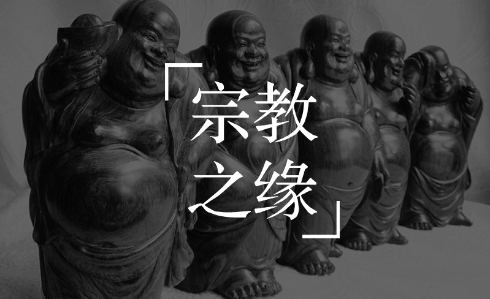
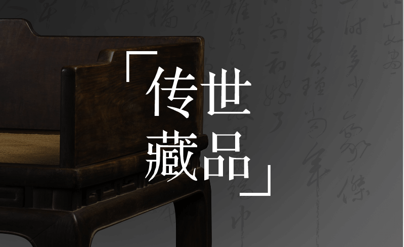
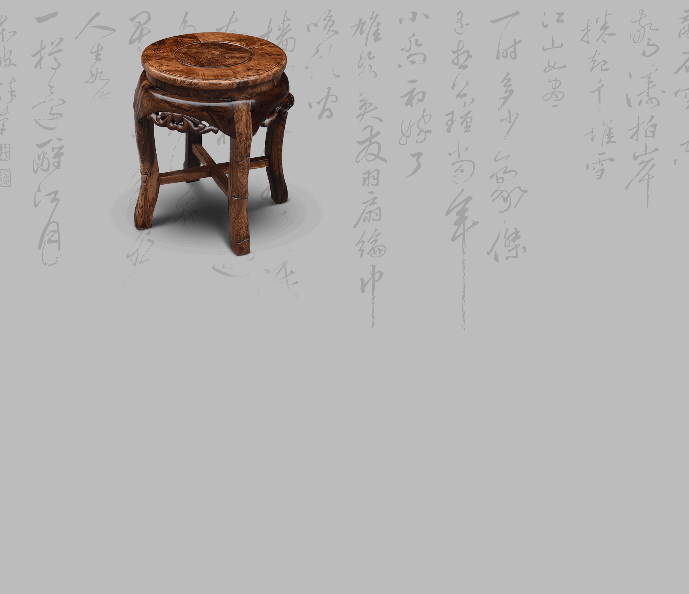

从明朝开始，到嘉庆以后海黄急剧减少，且成材速度非常慢，制作大件家具至少需要500年以上的原木。 据了解，上世纪80年代前，海黄曾作为药用消耗了60%以上；上世纪80年代末到2000年国内家具消耗量剧增，所以近十来年所剩的原材料已经濒临枯竭。
海黄的稀缺性已是有目共睹，物以稀为贵为其一。 明清宫苑海黄盛行，将其视为名士生活的一种重要标志。帝王贵胄读书怡情、行乐坐卧无不以它为伴，彰显身份地位。 在现代，不论是高玩收藏家还是投资人，都印证海黄作为传世之品，它的收藏永远不缺市场，而且价值无法估量。 既有“古”之历史年代，又有“今”之稀有之珍贵。作为中国悠久历史文化的产物，海黄已成为华夏文明不可或缺的文化因素。

海黄与宗教的缘分是与生俱来的，被认为是唯一能通三界的香气而着称。其坚忍与敦厚，修得百年风霜而立根不动，气味美好，能袪除种种不净。自古以来，就被世界五大宗教共同认同的稀世珍宝。

海黄的价值离不开它的药用性，一直以来被医学界奉为至宝，古今医书都有记载其独特的医药功效。 《本草纲目》：“疗折伤、金疮，止血定痛，消肿生肌.” 《海药本草》：“诸天行时气宅舍怪异，并烧之有验” 《本草经疏》：“上部伤，瘀血停积胸膈骨，按之痛或并胁肋痛”、“治内伤或怒气伤肝吐血。” 《本草汇言》：“治天行疫疠，瘟瘴灾疾。”《玉楸药解》：“疗梃刃损伤，治痈疽肿痛。” 《得配本草》：“入血分而降气，治怒气而止血。” 《本草再新》：“治一切表邪，宣五脏郁气，利三焦血热，止吐，和脾胃。”




一般为赤红色或深红色，在空气中氧化可呈暗红色
木纹质朴美观，有深褐色或黑色直丝状条纹
大红酸枝锯开时，木材散发一种辛香，闻之有酸辛味
坚而重，结构细腻、油质重，可沉于水
一键预约，找老毛聊一聊，到工厂看一看以下均为必填，方面我们更好地为您服务！
2018-4-8 18:11:17 李先生 北京 158****9526 已预约
联系我们